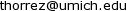
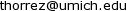
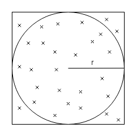
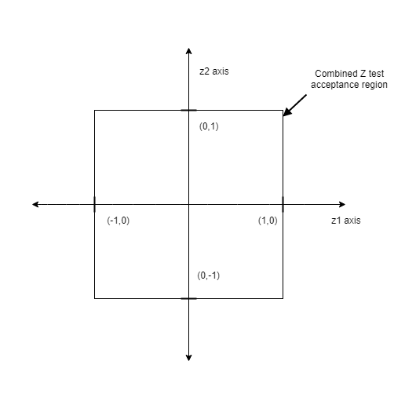
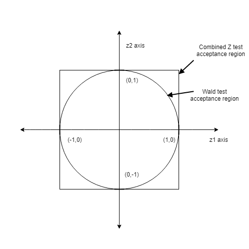
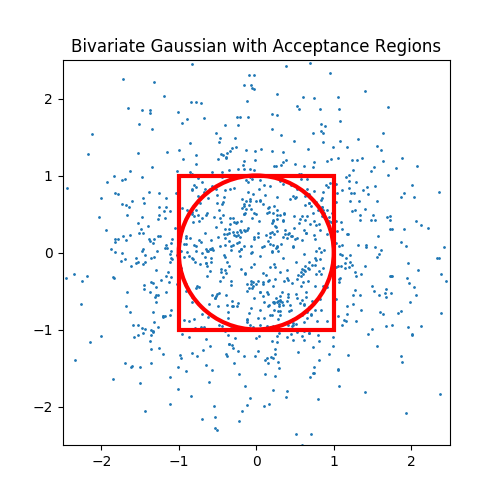
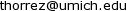

or .
or .
The idea for this project was loosly inspired by a method of estimating $\pi$ using darts. The idea is that if you have a circular dartboard inscribed perfectly in a square, and threw darts perfectly randomly at the entire square, the fraction of darts in the circle would be approximately $ \frac{\pi}{4} $.

The reason this occurs is that the area of the square is $ 4r^2 $ and the area of the circle is $ \pi r^2 $.
Since the darts are thrown randomly, the fraction that land in the circle will be equal to the ratio of the circle's area to the square's area, $ \frac{\pi r^2}{4r^2} = \frac{\pi}{4} $. Thus if we calculate the empirical ratio of darts in the circle to darts in the square, and multiply it by $ 4 $, we will have $ \pi $.
People have tried this and come up with other clever ways to estimate $\pi$ like dropping sticks and counting how many cross lines. However my method is a bit more complicated.
I first got the idea for this project in a stats course called applied regression analysis. The professor was explaining hypothesis testing which is a way of figuring out if estimates you've made using data to explain relationships between variables are significant or not. In particular he was was discussing the Z test and the Wald test. The professor mentioned that if you wanted to test multiple hypotheses, it was better to use a Wald test than to use multiple idependent Z tests, and the diagram he drew on the board to explain why was a circle inscribed in a square. At that moment I knew it would be possible to estimate $\pi$ by comparing the results of Z and Wald tests on the same data sets.
Before I get to hypothesis tests, I will give some background on linear regression. Linear regression is a method of quantifying linear relationships given data. For example, you are interested in predicting how much a house will cost given the square footage of the house and the number of bedrooms. To do this you could collect data on many houses that have sold and record the square feet, the number of bedrooms and the price it sold for. Your goal would be to fit the following equation. $$ \textrm{price} = \hat{\beta_0} + \hat{\beta_1} * \textrm{sq ft} + \hat{\beta_2} * \textrm{#bedrm} $$ Where the goal is to find values for the $\hat{\beta}$ terms which make the predicted price as close as possible to the true price. It turns out that there is an easy way to do this if we represent all of our data as matrices and vectors. $$X = \begin{bmatrix} 1 & 1900 & 4 \\ 1 & 1200 & 3 \\ \vdots & \vdots & \vdots \\ 1 & 3600 & 4 \end{bmatrix} \quad y = \begin{bmatrix} 890,000 \\ 640,000 \\ \vdots \\ 1,400,000 \end{bmatrix} \quad \hat{\beta} = \begin{bmatrix} \hat{\beta_0} \\ \hat{\beta_1} \\ \hat{\beta_2} \end{bmatrix} $$ In the $X$ matrix, the second column holds all of the square foot measuremnts for the sold houses, the third column holds the number of bedrooms, and the first column is all ones. (This column helps us fit the $\hat{\beta_0}$ term but is not important for this post)
The $y$ vector represents the prices that all of the houses sold for.
And $\hat{\beta}$ is the vector of coefficients we want to solve for.
With these definitions set, this is the explicit equation to solve for $\hat{\beta}$ given $X$ and $y$.
$$ \hat{\beta} = (X^\top X)^{-1} X^\top y$$
The idea behind linear regression is that the data follows a true linear equation: $$ \textrm{price} = \beta_0 + \beta_1 * \textrm{sq ft} + \beta_2 * \textrm{#bedrm} $$ In this equation the $\beta$'s are true unknown values which we are trying to approximate with $\hat{\beta}$.
The purpose of a hypothesis test is to determine whether the estimate we made, $\hat{\beta}$, is statistically significant. For example, in the previous example, let's say we solve the equations and find that $\hat{\beta_2} = 100,000$. This means that for every bedroom added to the house, the expected selling price increases by $\$100,000$. We may wish to ask, "How likely is it that, if the number of bedrooms does not affect the true price, that I would have observed this data?" If the answer to to that question is, "very very unlikely", we say that the number of bedrooms is statisticaly significant in predicting the selling price of a house. Similarly we can ask the converse question: "How likely is it that, if the number of bedrooms impacts the selling price by $\hat{\beta_2}$, that we would observe this data?" This is probably going to be much more likely because the equation we used to solve for $\hat{\beta}$ has the property that it actaully maximizes that probability.
However these tests can go wrong. In reality, there are countless other factors that go into the selling price of a house. We do not choose to model every possible thing so they are included in the model as a "noise" term with mean 0. $$ \textrm{price} = \beta_0 + \beta_1 * \textrm{sq ft} + \beta_2 * \textrm{#bedrm} + \epsilon $$
Due to this noise, it is possible for a statistical test to get the wrong answer. For example, we might ask how likely it is to see this data if the true value of $\beta_2$ is $\hat{\beta_2}$? And the test could say "not likely at all", even if it was the case that $\beta_2 = \hat{\beta_2}$. This is known as a false reject. This is because in this test, the null hypothesis was that $\beta_2 = \hat{\beta_2}$, and the test rejected that, even though it was true.
The first test relevant to this post is the Z-test. This is a test of a single coefficient for a linear model. The way a hypothesis test works is that you pick some guess for the coefficient, I will denote that as $\bar{\beta_j}$. The j subscript just means it is a guess for the jth coefficient. This guess is known as the null hypothesis. Then a test statistic is calculated, and its value is compared to a cutoff value for a distribution. In the case of the Z test statistic, it is the standard normal distribution. What this means is that the probability of seeing the data under the null hypothesis is the same as the probability of seeing this value of Z when sampling from the normal distribution. So if the Z value is too large or too small, the test rejects since this means it would be unlikely for us to see this data if the null hypothesis was true.
The equation for the Z test statistic is as follows. $$z = \frac{\hat{\beta_j}-\bar{\beta_j}}{s_n[(X^\top X)]^{\frac{1}{2}}_{j,j}} \textrm{ where }s_n = \left(\frac{1}{n-1}\sum_{i=1}^{n}(y_i-x_i^\top \hat{\beta})^2\right)^{-1/2} \textrm{ which is the standard deviation of the estimator } \hat{\beta}$$ Then we can treat $z$ as if it was sampled from a standard normal (it actually was!) and see how likely/unlikely it was. We can compare it to a threshold we set ahead of time to test its significance.
For example, if we wanted 95% significance or our test, we would use the theshold value of 1.96. This is because 95% of the probability mass of the standard normal falls between -1.96 and 1.96. This means that if in reality the null hypothesis was true, there is a 95% chance that $z$ would fall into that range. Thus is we observe a $z$ which is less than -1.96 or greater than 1.96, we reject the null hypothesis.
To convince yourself of this you can look at the equation for $z$ and note that large or small values could be obtained by there being a large absolute difference between $\hat{\beta_j}$ and $\bar{\beta_j}$. This means that if the hypothesized value is far from the value obtained by linear regression, we are more likely to reject.
The second hypothesis relevant for my method of estimating $\pi$ (yeah this post is still about $\pi$) is the Wald test. The Wald test is significantly more flexible than the Z test. With the Wald test you can test hypothesis regarding multiple coefficients at the same time. You can even test non-linear hypotheses. (But we won't need that today)
To specify the null hypothesis of the Z test, we ony needed to specify a value and which coefficient to compare it to. With the Wald test, we represent the hypotheses as a matrix and a vector. There is a constraint matrix $C$, and a value vector $b$ and the hypothesis is stated as $C\beta = b$.
Just like in the Z test, where if the difference between $\hat{\beta_j}$ and $\bar{\beta_j}$ is small, the test statistic is close to 0, in the Wald test, if the difference between $C\beta$ and $b$ is small, the test statistic is close to 0.
The Wald test statistic is defined as follows:
$$w = s^{-2}(C \hat{\beta} - b)^\top(C(X^\top X)^{-1}C^\top)^{-1}(C\hat{\beta}-b) $$
Unlike $z$ which was compared against the standard normal distribution, $w$ is compared against the Chi squared distribution with as many degrees of freedom as there are constraints (rows) in the matrix $C$. The Chi squared distribution with $k$ degrees of freedom is defined as the sum of $k$ independent squared standard normal distributions.
because the Chi squared distribution is the sum of squared Gaussians, it only takes positive values. For this reason we only reject if the test statistic is above a predetermined cutoff value.
Now that we know what hypothesis tests are and how to use them, we can move on and start to understand their geometry. What I mean by that it we can visualize regions of space in which the tests will either reject or accept.
In order to get the desired shapes to be able to estimate $pi$ we have to set up a very specific linear model with very specific hypothesis tests.
The linear equation we will be using is as follows:
$$y = x_1 - x_2$$
Note that this can be interpreted as jsut like the housing pice equation above with $\beta_0 = 0, \beta_1 = 1, \textrm{and } \beta_2 = -1$. Note that the choice of 1 and -1 is compltely arbitrary. We could have picked any two values and this would theoretically still work.
In order to have something to actually compute, I construct many data sets which follow this linear equation. To do this I generate two random numbers, these represent $x_1$ and $x_2$. Then I subtract the second one from the first one, then I add a small amount of Gaussian noise.
I repeat this process many times until I have 1 million data sets of one thousand points each.
Once I have these synthetic data sets, I fit the linear regression estimator to each one. That is, for each data set, I calculate $\hat{\beta}$ using the $x$'s and $y$'s which compose the data set.
The first test I want to perform is actually two tests. I will perform a Z test on each of the linear regression estimates $\hat{\beta_1}$ and $\hat{\beta_2}$ with the hypotheses being $\hat{\beta_1} = 1$ and $\hat{\beta_2} = -1$. because I constructed the data sets myself according to a true known linear equation, I expect these estimates to be close to $1$ and $-1$ respectively. However, due to the Gaussian noise, they could be off by a little bit, or even a lot.
The combined test will follow this rule: If the $z$ value from either Z test is larger than 1 or less than -1, reject, otherwise accept. That is to say, I reject my combined hypothesis if either of the individual Z tests reject. I accept only if the Z tests for both coefficients accept. And the threshold value for acceptance is 1. This threshold is also arbitrary, the only thing that matters is that I use the same threshold for my second test. In general we would expect to see mostly accepts because our null hypothesis is actaully true.
This test is just one test, but it is testing both coefficients at the same time. The hypothesis of this test will be specified as follows:
$$C = \begin{bmatrix}
0 & 1 & 0 \\
0 & 0 & 1
\end{bmatrix} \quad
b = \begin{bmatrix}
1 \\
-1
\end{bmatrix} $$
The reasoning behind this is that if $\hat{\beta}$ is close to $\begin{bmatrix} 0 \\ 1 \\ -1 \end{bmatrix}$, then $C\hat{\beta} - b$ will be close to 0 and the test will accept. Like the Z tests, we will use 1 as the cutoff region. That is, we will compute $w$ for each data set, and if it is less than 1 we accept, if it is greaterthan 1 we reject.
(Sidenote at this point, I have a suspicion that this is actually the same as doing two independent Z tests, squaring the test statistics, and adding them. If anyone reading this can prove or disprove this please let me know)
I will now show the acceptance regions of each of these two testing methods. First I should define the space we are looking at. I will be plotting this in a 2-D cartesian coordinate system, where the x axis is the values of $z_1$ ie, the Z statistic for the hypothesis on $\hat{\beta_1}$ and the y axis is $z_2$, the Z statistic for the hypothesis on $\hat{\beta_2}$.  The test accepts only if both $z$ values are less than 1. So the acceptance region in Z space is this square. If even one of Z values is large, the point is outside of the square so the test rejects.
Now to plot the Wald test acceptance region. Now remember the Wald test statistic is from the Chi square distribution, which is the sum of squared standard Gaussians. Also remember that each of the Z test statistics is from a standard Gaussian. This means that the Wald test acceptance region can be plotted in the same space as the combined Z test acceptanc region!
And here's the important part, do you remember the equation for a circle? It's
$$x^2 + y^2 = r$$
So if we are plotting in Z space it's $z_1^2 + z_2^2 = 1$. The 1 is the cutoff region. If the sum of suares of the Z's are less than one (point is inside of the circle), the test accepts, if the sum of squares is greater than one (outside of the circle) it rejects.

And now I am sure you can see where all of this was going. If I have a huge amount of data sets, and on each one I compute $\hat{\beta}$, and perform both the combined Z test and the Wald test, the ratio of Wald test accepts to combined Z tests accepts will be $\frac{\pi}{4}$. So all we need to doa milion tests, calculate the ratio and multiply by 4 to get $\pi$.
So I had sucessfully coded all of this up. I wrote code which creates data sets according to linear equations, fits linear regression estimators to the data, and coded from scratch (from numpy) the equations for the hypothesis test statistics. I'd done tens of millions of runs, tallied the accepts and rejects, but my answer was not even close to $pi$.
I racked my brain to find the bug. I played with the true coefficints, the coeficients tested against, the noise added to the data sets. I re-coded the Wald test according to the equation on Wikipedia instead of the one from my lecture notes but it was all of no use. There was a more fundamental mistake with my approach.
I thought what I was doing was exactly analagous to the the darts case. I sample points in a 2 dimensional space, and count the fraction in various regions. Well it turns out the problem was not with the Wald test, or the Z tests, or the data sets or the fractions. The problem was with the sampling.
In the darts example, the points were sampled according to a uniform distribution. Every point on the board is just as likely as every other. However, in the hypothesis testing case, the points were sampled from a bivariate Gaussian. This means that the samples were disproportionately clustered in the central area just like the probability destiny of a 1 dimensional Gaussian is focused around the mean.
 In this figure I plotted the acceptance regions of our two tests, as well as 1,000 samples from a bivariate Gaussian. As you can see, the points are not spread evenly across the space. They are more concentrated at the origin since the mean of the distribution is (0,0). Since my method of estmateing $\pi$ relied on the ratio of points in the circle to points in the square, my estimator was thrown off by the relative lack of points in a very critical region. The critical region is the area that is in the square, but not in the circle. This corresponds to the Wald test rejecting but the combined Z tests accepting.
Now that I saw the problem, I was able to start on a solution. I needed to compensate for the fact that my method of estimation requires uniform samples but my sampling method was Gaussian. I did some research and discovered that it's actually possible to convert any probability distribution into a uniform distribution over the range [0,1] by plugging the samples into the CDF of the original distribution.
For the two Z statistics, this is very straightforward. They each follow a standard normal distribution so I can plug each one through the CDF of the normal distribution and thn they will be uniform random variables. For the normal distribution the CDF is:
$$\frac{1}{2}\left[1+\textrm{erf}\left(\frac{x-\mu}{\sigma \sqrt{2}}\right)\right]$$
Where $\textrm{erf}$ is the error function
Since this is the standard normal, $\mu = 1$ and $\sigma = 1$ so this simplifies to:
$$\frac{1}{2}\left[1+\textrm{erf}\left(\frac{x}{\sqrt{2}}\right)\right]$$
I simply put each Z statistic into this function before comparing to the cutoff value. However I have to rescale and shift the resulting uniform random variable. The reason for this is that the resulting variable is in the range [0,1] which does not fit the geometry of my test. I decided to scale the results to a uniform istribution over the range [-2,2] so that the entire acceptance region of both tests is covered and there is plenty of points in the rejection regions as well. To accomplish this I multiplied the variable by 4 which made it over the range [0,4] then subtracted 2 which made it over [-2,2]
Converting the Wald statistic ended up being a bit more complex. I can easily do what I did above and convert a Chi squared random variable to a uniform by using the CDF: $$\frac{1}{\Gamma(\frac{k}{2})}\gamma \left(\frac{k}{2},\frac{x}{2}\right)$$ where $k$ is the degrees of freedom, in our case 2, $\Gamma$ is the gamma function, and $\gamma$ is the incomplete lower gamma function.
The problem with this is that is gets a uniform distribution, but this does not fit our geometry either. To fit the geometry we need the sum of 2 squared independent uniform random variables. This is actually much more difficult to do. Given a single sample from a Chi squared distribution, which is the sum of two squared Gaussians, reconstruct two independent Gaussians. The problem is that in the addition, information is lost. My first naive solution was to convert the Chi squared into a uniform twice, square them and add them. This didn't work because the samples were not independent.
The next thing I tried was randomly splitting the Chi squred into two pieces. Taking the square root of each so they represent potential Gaussians which could have formed that Chi squared samples, then convert each of those to uniforms using the normal CDF. This also didn't work since they were still correlated.
My eventual solution is a bit of a hack. My solution relies on the fact that samples from distributions like these are not correlated through time. What I mean by this is that two consecutive samples from a distribution can just as easily be seen as samples from two independent distributions. So this is what I did. I stored a cache of previous samples from the Chi squared converted to uniform, and when a new sample comes in, I convert it to uniform, then sample of the previous ones from the cache, square both and add them together. This results in a sum of two squred uniform random variables.
When I finally have the two Z statistics converted to uniforms, and the Wald statistic converted to a sum of squared uniforms, I can finally count the acceptances. Using 2.5 million data sets, where each data set had 1,000 data points, and the Gaussian noise on the targets had variance of 1.0, $\textbf{the resulting estimate of } \boldsymbol{\pi} \textbf{ was } \mathbf{3.14013689477}$. This is pretty close but not really as close as I was hoping for. In an attempt to get more accuracy, I rewrote the whole thing using multiprocessing which sped up my code by about 6x allowing me to do many more samples in the same time. When I ran overnight for 400,000,000 data sets, the resulting estimate of $\pi$ was $\mathbf{3.14157803022}$.
Not bad :)
The idea for this project came as about a two second idea while in class. Now about 8 months later, it took me almost a month to get this all to work. Along the way I had to relearn almost completely the Z and Wald test because I had misunderstood both how they were calculated and the relationship between power and significance of the tests. Realizing that the tests had to be set to have the same value of the acceptance cutoff an not be calibrated to have the same power or significance was an important realization. I initially thought that if the Z and Wald tests were calibrated to have the same power, their ratio of true accepts would yield pi, this was not the case.
This project also helped me understnd the chi squared distribution in a much deeper way. Seeing that the degrees of freedom is the number of squared Gaussians and can be determined by the sum of squared individual Z test statistics was very eye opening.
Before this I never knew the trick of putting samples of any distrbution through the CF to obtain uniform smaples. In my research about this I also learned a lot more about conversion between various statistical distributions and a much more useful application of this being putting uniform samples through the inverse CDF to obtain samples from any desired distribution.
Finally I had a lot of fun learning a little bit about multiprocessing in python. I was inspired to try it by a thread on reddit. I realized that my computer has 4 cores with hyperthreading and my single threaded python code was not fuly utilizing my CPU and all of these samples were independent so they could easily be split across multiple processes. I think this will come in handy a lot in the futue.
If you read all the way here, thanks for putting up my writing. I realized part way through that this might read like the ramblings of a lunatic but I've gotten this far so I'm not rewriting it.
All the code used in this project is available here. If you have questions, comments, or suggestions you can email me at or .